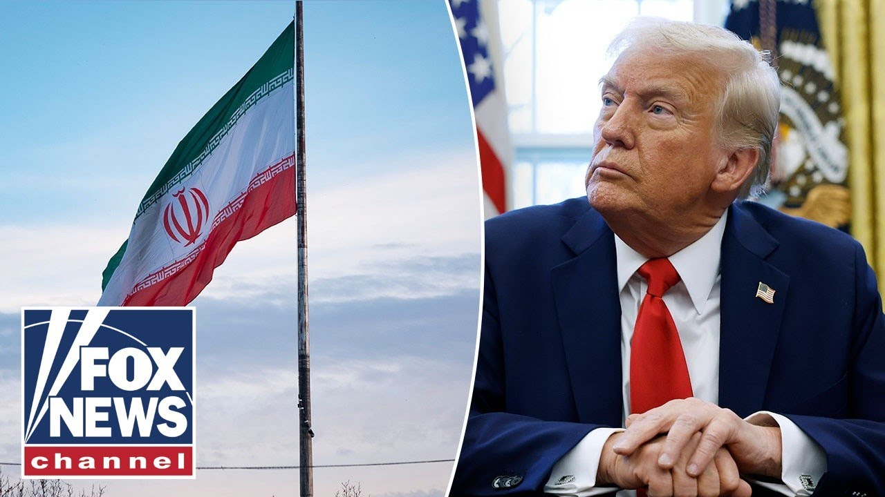

【"伊朗不应针对美国"：特朗普政府否认参与以色列袭击】
Summary: The IDF released footage of Israel destroying missile launchers in Iran, while the US denies involvement and seeks to continue nuclear negotiations, despite Iran suspending talks after the strikes.
摘要： 以色列国防军发布视频显示以军摧毁伊朗境内导弹发射器，美国坚称未参与袭击并希望继续核协议谈判，但伊朗在袭击后宣布暂停谈判。

⏱️ Estimated Reading Time: 20 min
📚 六级生词 📚 雅思生词 📚 托福生词 📚 专八生词 📚 SAT生词 📚 考研生词 📚 GRE生词 📚 高考生词
We're getting brand new video released from the IDF that shows Israel destroying missile launchers inside Iran.
以色列国防军最新发布的视频显示，以色列摧毁了伊朗境内的导弹发射器。
Take a look at that.
请看这段画面。
Wow.
哇。
Powerful footage.
震撼的画面。
And right now, President Trump is currently meeting with his National Security Council in the situation room that started at 11:00 a.m.
目前，特朗普总统正与国家安全委员会在战情室举行会议，会议于上午11点开始。
And the US says it has played no role in Israel's offensive against Iran.
美国表示未参与以色列对伊朗的进攻行动。
The US has been emphatic on that.
美方对此态度坚决。
And officials claim they're still hoping to continue the nuclear agreement negotiations with the Iranian regime.
官员们声称仍希望继续与伊朗政权进行核协议谈判。
Rich Edson is live at the White House with the latest.
里奇·埃德森正在白宫带来最新报道。
Rich.
里奇。
Well, before that National Security Council meeting this morning, the president has been online.
在今早国家安全委员会会议前，总统一直在线上活动。
He's been trying to push the Iranians to reach an agreement to dismantle their nuclear program so they can avoid attacks like this.
他试图推动伊朗达成协议拆除其核计划，以避免此类袭击。
The president posted, quote, "Two months ago, I gave Iran a 60-day ultimatum to make a deal.
总统发文称："两个月前，我给伊朗下达了60天达成协议的最后通牒。
They should have done it.
他们本应完成。
Today is 61.
今天是第61天。
I told them what to do, but they just couldn't get there.
我告诉了他们该怎么做，但他们就是无法达成。
Now they have perhaps a second chance.
现在他们或许有了第二次机会。"
The president told Brett Bearer that he was aware of these Israeli strikes ahead of time, but the administration is denying that the US participated.
总统向布雷特·贝尔透露他事先知晓以色列的袭击，但政府否认美国参与其中。
Secretary of State, also the national security adviser, Marco Rubio, wrote in a statement, quote, "Israel took unilateral action against Iran.
国务卿兼国家安全顾问马可·卢比奥在声明中写道："以色列对伊朗采取了单边行动。
We are not involved in strikes against Iran.
我们未参与对伊朗的打击。
Let me be clear, Iran should not target US interests or personnel."
明确声明，伊朗不应针对美国利益或人员。"
Monday, the president spoke with Israeli Prime Minister Benjamin Netanyahu.
周一，总统与以色列总理本雅明·内塔尼亚胡通话。
A few days later, the US started moving American staff and families out of the region.
几天后，美国开始撤离该地区的美国工作人员及家属。
Trump had said he wanted Israel to hold off on an attack to allow for negotiations.
特朗普曾表示希望以色列暂缓攻击以留出谈判空间。
Look, it's very simple, not complicated.
听着，这很简单，并不复杂。
Iran cannot have a nuclear weapon.
伊朗不能拥有核武器。
Other than that, I want them to be successful.
除此之外，我希望他们成功。
I want them to be tre We'll help them be successful.
我们将帮助他们成功。
We'll trade with them.
我们将与他们贸易。
We'll do whatever is necessary.
我们将采取一切必要措施。
Earlier this week, the president said Iran had become much more aggressive in its nuclear negotiations.
本周早些时候，总统称伊朗在核谈判中表现得更为激进。
Iranian officials have insisted that any agreement allow for them to still enrich uranium on their territory.
伊朗官员坚持任何协议都必须允许其继续在本土进行铀浓缩活动。
White House envoy Steve Witoff was scheduled to meet again this weekend for a sixth round of negotiations with Iranian officials to discuss their nuclear program.
白宫特使史蒂夫·维托夫本周末计划与伊朗官员举行第六轮核计划谈判。
After these attacks, Iranian state media is reporting that Iran is withdrawing from talks until further notice.
袭击发生后，伊朗官方媒体宣布暂停谈判直至另行通知。
We asked if Iranian officials have communicated that to the United States.
我们询问伊朗官员是否已向美国传达这一决定。
If Iran has said to the US, "Hey, we're withholding on these talks.
若伊朗已告知美国："我们暂停这些谈判。
We're not going to join them anymore."
我们不再参与。"
A US official responded only that we quote hope to have talks.
美国官员仅回应称"希望继续谈判"。
Back to you.
交还给您。
All right, Rich.
好的，里奇。
We'll keep us updated.
请持续更新消息。
Thank you.
谢谢。
We'll do.
我们会跟进。
So, I want us to follow this closely.
我希望我们密切关注此事。
I want to play what the president said yesterday and juxtapose it against some of the reporting that's coming out.
我想播放总统昨日的表态，并与最新报道进行对比。
This is what President Trump said during our hour just yesterday.
以下是特朗普总统昨日在我们节目中的发言。
As the Israelis apparently gear up for some kind of an attack, a possible attack on Iran, are you trying to talk Netanyahu out of doing that?
以色列显然正准备对伊朗发动某种攻击，您是否试图劝阻内塔尼亚胡？
Or are you so against Iran having a nuclear weapon that you're okay?
还是您如此反对伊朗拥核以至于默许此事？
He does his thing because it is not an American war.
他自行其是因为这不是美国的战争。
Yeah, it's a very fair question.
这是个非常合理的问题。
Look, I want to have an agreement with Iran.
听着，我希望与伊朗达成协议。
We're fairly close to an agreement.
我们已非常接近协议。
We are fairly close to a pretty good agreement.
我们已接近一份相当不错的协议。
Uh, it's got to be better than pretty good though.
不过必须比"相当不错"更好。
But it's got to be I'd much prefer an agreement.
但我更倾向于达成协议。
As long as I think there is an agreement, I don't want them going in because I think that would blow it.
只要我认为协议有望，我就不希望他们行动，因为那可能破坏协议。
Might help it actually, but it also could blow it.
或许有助于协议，但也可能适得其反。
So, President Trump saying he did not want Israel to do this.
因此特朗普总统表示他并不希望以色列采取行动。
This comes, George, as Axios is reporting this from two Israeli officials.
乔治，与此同时Axios援引两名以色列官员报道称。
Claim to Axios Trump and his aids were pretending to oppose an Israeli attack in public and didn't express opposition in private.
他们向Axios声称特朗普及其助手公开假装反对以色列袭击，但私下并未表示反对。
We had a clear US green light.
我们获得了美国的明确默许。
One claimed the goal, they said, was to convince Iran that no attack was imminent and make sure Iranians on Israel's target list wouldn't know the new location.
其中一人称目的是让伊朗相信袭击不会立即发生，并确保以色列目标名单上的伊朗人不知晓新位置。
They claimed the plan went so far as for Netanyahu's aids to brief Israeli reporters that Trump had tried to put the brakes on the attack in a Monday phone call when in reality there was coordination.
他们声称计划甚至让内塔尼亚胡助手向以色列记者吹风，称特朗普在周一通话中试图阻止袭击，实则双方存在协调。
The White House denies this.
白宫对此予以否认。
That's the reporting.
这是报道内容。
So the question is, was there the 40 chest going on?
所以问题在于是否存在战略欺骗？
Yeah.
是的。
I mean, again, a lot of this is going to play out.
我的意思是，很多情况将逐渐明朗。
Um, we'll find out ultimately the truth, what, you know, the president uh knew, how he acted upon that information, and but the bottom line is that he's still offering a diplomatic offramp for this not to be ratcheted up to the next level.
我们终将查明总统知晓哪些信息及其应对方式，但关键是他仍提供外交途径以避免局势升级。
And his policy is very clear that he does not want to commit US troops and have another ground war at this stage.
他的政策很明确：现阶段不愿派遣美军卷入另一场地面战争。
Um, are we allies with Israel?
我们是以色列盟友吗？
Absolutely.
毫无疑问。
Do we support their defense infrastructure?
我们支持其国防体系吗？
We have historically.
历来如此。
Are we aligned against Iran?
我们共同对抗伊朗吗？
Absolutely.
绝对一致。
Um will there be collaboration potentially from an intelligence standpoint?
情报领域可能存在合作吗？
I suspect that there is.
我认为存在。
Um because we all anticipate that there will be an Iranian kinetic response in in short order.
因为我们预计伊朗很快会采取武力回应。
Um so I I focus less on these kind of details initially because historically the Israelis have advised the US and and our intelligence agencies that there is a forthcoming attack.
因此我最初不太关注这些细节，因为历史上以色列会提前告知美国及情报机构即将发动的袭击。
Um, but even if he did make the argument that we shouldn't or Israelis should not have done it, do we really think that Prime Minister Netanyahu would have said, "Okay, well, I'm I'm not going to do this.
但即便他主张我们或以色列不应行动，我们真认为内塔尼亚胡总理会说"好吧，我不这么做"吗？
The Iranians are only 3 days away from highlyenriched uranium and being able to arm a missile directed at the Israelis and potentially exterminating their nation.
伊朗仅需三天就能获得高浓缩铀并武装针对以色列的导弹，可能毁灭其国家。
You know, they've got to act in a way that's in their self-interest.
他们必须采取符合自身利益的行动。
And I think that's where the consensus is in the Congress, certainly in the White House, to make sure that Israel can defend itself in this time of peril."
我认为这是国会乃至白宫的共识——确保以色列在此危急时刻能够自卫。
Harris Barack Ravid of Axio says he just spoke with President Trump.
Axios的哈里斯·巴拉克·拉维德称刚与特朗普总统通话。
The details are coming out on that call.
通话细节正在披露。
He said it was Trump said a big day yesterday and he noted that Israel used quote great American equipment during the attack.
他表示特朗普称昨天是重要一天，并指出以色列袭击中使用了"精良的美国装备"。
No doubt true.
毋庸置疑。
Yeah.
是的。
And Jillian, you and I were talking about that off camera a few minutes ago during the commercial break.
吉莉安，我们刚才广告时段还在台下讨论这点。
Like what would the connective tissue actually look like?
真正的协作关系究竟如何？
Uh we we work symbiotically on a lot of the intelligence.
我们在情报领域密切协作。
So I I can't imagine that we wouldn't have some sort of regard for a shared resource or a shared intelligence for this operation.
因此难以想象我们会不重视此次行动中的共享资源或情报。
Just how deep it went.
只是程度深浅问题。
I I have all confidence that if anybody's going to tell us, it's going to be President Trump.
我完全相信若有人会告知我们，那必是特朗普总统。
He's the most transparent president we've ever seen.
他是我们见过最透明的总统。
I mean, you've got such access to him from the media.
媒体能如此直接接触他。
Uh I I did think it was interesting from and I mentioned him earlier.
我之前提到的这点很有趣。
He was an Israeli special ops veteran, Aaron Cohen.
以色列特种部队老兵亚伦·科恩说：
He said that look, would you rather have a situation where you're playing around with an Iranian country that is nuclear, you know, has nuclear power and and decries death to America on a daily basis, all hours, 24/7.
"你更愿面对一个拥有核能、整天叫嚣'美国去死'的伊朗，
They hate you and they hate Israel.
他们仇恨你和以色列，
Uh, or would you rather take that weaponry away from them?
还是更愿解除其武装？
They're still going to be who they are potentially, but now you've killed a lot of them.
他们本质或许不变，但现已伤亡惨重。
Maybe from the inside out that country changes.
这个国家可能从内部开始改变。
And maybe we'll see that.
或许我们将见证这点。
I mean, you're already seeing uh, you know, people push against this government before this.
当前已有民众反抗该政府。
I don't know how long it will take for Iranians to say enough is enough with with the Mullas and the and all of it.
不知伊朗人还需多久才会对毛拉们说受够了。
So maybe this is an opening for that, too.
或许这也是个契机。
I'm optimistic.
我持乐观态度。
Julian, we learned a lot looking at that signal chat, you know, signal gate that happened about the Houthy strikes and you saw JD Vance articulate one view of the world and then you saw Mike Waltz articulate a more hawkish view of the world.
朱利安，我们通过"信号门"聊天记录了解胡塞武装袭击事件，看到JD·万斯阐述一种世界观，而迈克·华尔兹则持更强硬立场。
Well, Politico says about that Rubio statement where notably, you know, it was we had no involvement.
Politico指出卢比奥声明中仅强调"我们未参与"，
There was not that unequivocal we support this line in there.
却未明确表态"我们支持此举"。
Well, Politico says a Trump official told Dasha, one of their reporters, that the White House drove the message put out by Rubio, an ardent foreign policy hawk and behind the scenes, there was a MAGA versus neocon debate that unfolded over the wording of the statement in the leadup to the release.
Politico称特朗普官员向记者达莎透露，白宫主导了鹰派卢比奥的声明措辞，发布前幕僚间就声明措辞爆发了"MAGA派与新保守派"之争。
So that debate is very much alive and well politically and very much within the walls of the White House without question.
这场政治辩论无疑在白宫内部激烈进行。
And all the experts that I've interviewed on this, honestly, I've spoke to Sean Hannity about it.
我采访的所有专家，包括肖恩·汉尼提，
I've spoken to Victor Davis Hansen about it.
维克多·戴维斯·汉森，
Numerous individuals and Coulter I've spoken to about it.
安·库尔特等众多人士——
And you'll hear like, listen, we we want America first.
他们都表示"美国优先"，
We want to focus on us.
专注本国事务，
We don't want to be spending hundreds of billions of dollars to fight somebody else's war.
不愿耗资数千亿为他国作战。
you we're fighting for an ideology that they are not in alignment with.
我们为之奋斗的意识形态与他们并不一致。
You know, we left Afghanistan and 90% of them still want Sharia law and on and on and on.
我们撤离阿富汗后，90%民众仍支持伊斯兰教法。
But I don't believe that's what's happening here.
但我不认为当前情况如此。
And that's my point.
这就是我的观点。
I don't think this is someone else's war or Israel's war as far as I can tell.
据我所知这不是他国或以色列的战争。
So I I think that Trump gave them numerous offramps.
我认为特朗普提供了多次缓和机会。
He did and they did not take it.
但他们未把握。
I think this is a clear threat to America.
我认为这对美国构成明确威胁。
I don't think this is someone else's war.
不认为这是他国战争。
And again, I come back to I don't see the alternative personally.
我个人看不到其他选择。
You know, Emily, one fascinating part of this, President Trump did his first international trip to the Middle East.
艾米丽，有趣的是特朗普首次外访就是中东，
He met with a lot of Arab countries.
会晤多个阿拉伯国家。
And what we've noticed is there's been a lot of silence from other Arab countries.
我们注意到其他阿拉伯国家异常沉默。
No one's rushing to Iran's defense.
无人急于为伊朗辩护。
In fact, Jordan opened its airspace reportedly to Israel.
事实上约旦据报向以色列开放领空。
Not only that, you had for the first time, at least I recall, Lebanon's government telling Hezbollah to stand down.
黎巴嫩政府首次要求真主党克制。
So there's this really improved relation that I have to believe the Trump administration had a lot to do with.
这种关系改善我认为特朗普政府功不可没。
Perfect tea for what I wanted to talk about, Kaylee, which was exactly that.
凯莉，这正好切入我想讨论的话题。
Now, we knew in these leading up years to Trump's uh sort of stated, you know, new approach, right, the economic investment that we're not going to leave our blood and treasure anymore, but we're going to have these coordinated co-equal investments.
我们知道特朗普早年提出的新策略——不再流血耗财，而是进行对等经济投资。
That that was the way toward peace.
这才是和平之路。
And we learned that a lot of these countries the entire time through the Biden administration as well had been saying like oh gosh you know Hezbollah and Hamas they are the blight on our entire region.
我们了解到，许多国家在整个拜登政府期间也一直在说，真主党和哈马斯是我们整个地区的祸害。
All we want is stability.
我们只想要稳定。
We do recognize Israel as a state or we are happy to for peace so that our economic interests can thrive and so our people can live at peace.
我们确实承认以色列是一个国家，或者我们愿意为和平而努力，以便我们的经济利益能够繁荣，我们的人民能够和平生活。
100% I think that there have been a bunch of neighboring countries and especially those that signed the Abraham Accord during the first administration and beyond that have been waiting for this moment to essentially say can the kids stop having a tantrum and I say that obviously uh with full respect to all the lives that have been lost at the hands of these horrific terror organizations as proxies for the Islamic regime.
我认为，百分之百有一些邻国，尤其是那些在第一届政府期间及以后签署《亚伯拉罕协议》的国家，一直在等待这一刻，基本上是说，孩子们能不能停止发脾气，我说这话显然是对所有在这些可怕的恐怖组织作为伊斯兰政权代理人手中丧生的生命表示充分尊重。
So I say though too that as we talk about you know is it good cop bad cop how how how deep does the level of coordination go between Israel and the United States other than being our number one and top ally I think what we will discover and find out is that if Iran indeed takes one of those offramps then we will learn whether Israel indeed then gets off the gas pedal right and if they do then we know that this is a coordinated and and a symbiotic equally yolked attack but if not if they're like we don't care what's happening we're still going for it, then then that might reveal a level of either friction or uh different perspectives going into this.
所以我也要说，当我们讨论这是不是好警察坏警察的把戏，以色列和美国之间的协调程度有多深，除了是我们头号盟友之外，我认为我们会发现，如果伊朗确实选择了其中一条退路，那么我们就会知道以色列是否真的会踩刹车，如果他们这样做了，那么我们就知道这是一次协调一致、相互配合的攻击，但如果没有，如果他们表示不在乎发生了什么，仍然要继续行动，那么这可能显示出某种程度的摩擦或不同的观点。
Yeah.
是的。
And the Israeli ambassador this morning told Bill and Dana, "Hey, I' I'd be open to being part of those negotiations and talking about it."
今天早上，以色列大使告诉比尔和达娜："嘿，我愿意参与这些谈判并讨论这个问题。"
So interesting.
真有趣。
Kind of leaning into the Trump Trump strategy there.
有点倾向于特朗普的策略。
Hey everyone, I'm Emily Kano.
大家好，我是Emily Kano。
Catch me and my co-hosts Harris Falner and Kaylee McNenni on Outnumbered every weekday at 12 p.m. Eastern or set your DVR.
每周一至周五东部时间中午12点，在《Outnumbered》节目中观看我和我的搭档Harris Falner和Kaylee McNenni，或者设置你的DVR。
Also, don't forget to subscribe to the Fox News YouTube page for daily highlights.
另外，别忘了订阅福克斯新闻的YouTube频道，获取每日精彩内容。